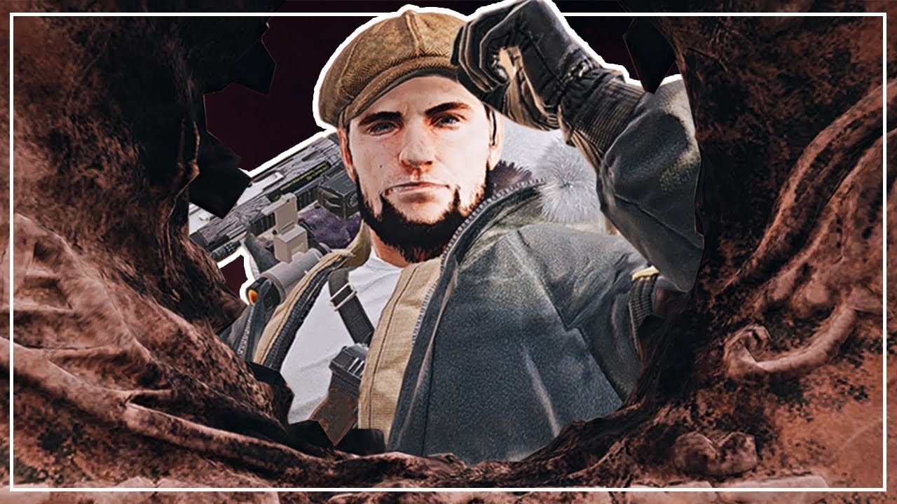

About Glaz
Glaz is a back-line marksman, capable of soft breaching and providing covering fire from a distance. Born and raised in Vladivostok, where his father worked in the shipping industry. Glazkov studied art in secondary school, until the Beslan school hostage crisis inspired him to transfer to the Cadet Corps and pursue a career in the armed forces.
Glaz elite skin.
Glaz's Characteristics
- He is silent and strong.
- He has is deadly from a distance
- He has is respected by his teammates.
Glaz's Teammates
His teammates are strong and silent like him. They all have different characteristics to Glaz. Click on the links below to read about them: